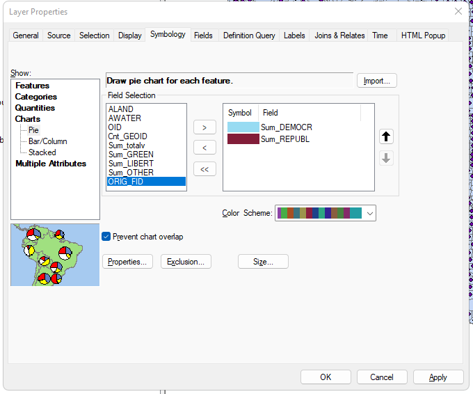

Bivariate Mapping Techniques in ArcGIS

An 1858 multivariate map by Charles Joseph Minard, using a nominal choropleth to represent departments that supplied meat to be consumed in Paris, proportional circles to represent significant volumes of that meat, combined with pie charts dividing it into relative proportions of beef (black), veal (red), and mutton (green).
{kind=link}
Preamble
This week’s assignment will feature a relatively complex ‘multivariable’ map for points features. In this type of mapping, multiple variables are shown in one map or in one map feature. In this demonstration lab, we will explore general symbology options for both points and polygons; Dot Density mapping - a form of multivariable mapping; and categories, quantities and charts.
First, we will create a proportional symbol for a Quantitative Value.
Second, we will explore charting options for Quantitative Values.
Third, we will use US Counties to map to a Categorical Value.
Fourth, we will explore how ArcGIS handles a common thematic quantitative mapping technique known as Dot Density Mapping.
Data
Lower_48= Polygon feature for US counties in Lower 48.county_2020_pre_pivot.dbf= Pre-processed ‘long’ datasetcounty_2020_post_pivot.dbf= Post-processed ‘wide’ datasetThe polygon features come from the US Census for US County boundaries, Located HERE.
- The election tabular data comes from the MIT Election Lab hosted at Harvard Dataverse
- To understand the process to
pivottabular data, more information HERE
Part I:
Open ArcGIS and point ArcCatalog to the
c3lab3lab data. Remember to uncompress (unzip) the data directory before proceeding. Save the connected.mxdaslab3.mxdNext, open the -
county_2020_pre_pivot.dbf. We will discuss ‘long’ data before proceeding tocounty_2020_post_pivot.dbfto discuss ‘wide’ data:
Part II:
From the polygon feature Lower_48.shp we will initiate a table join on the GEOID column in both the polygon feature and in the county_2020_post_pivot.dbf table:
keep only matching recordsOnce joined, its good practice to export the join to the Default.gdb.
Next, notice that the feature polygon is in coordinate system WGS84 which is not ideal for areal representation. A much better approach is to use a Conic map projection designed for the United States. We will search under Albers, choosing NAD 1983 (2011) Contguous USA Albers, applying this map coordinate system to the Data Frame. This is a good time to also save the .mxd.
NAD 1983 (2011) Contguous USA AlbersNAD 1983 (2011) Contguous USA Albers ResultPart III:
Before symbolization, We will transform the Polygon features to a points representation. In class 4 we will apply methods for polygon features; however, for class 3 we will stick with points features generally.
Utilize the Feature to Point tool and export the result to the Default.gdb:
Feature to PointNext, we will apply a proportional symbolization to the points utilizing the Graduated symbols function under the Quantities tab. All this work will be done at the layer level within Symbology.
Choose SUM_totalv as the input value; accept the defaults which we will discuss together:
Review the results:
Part IV:
Next we will apply a Charts function using the Pie option. The input for this symbolization will be Sum_DEMOCR and Sum_REPUBL, colorized to represent these two political parties.

Review the results:

Part V:
The next symbolization will feature Categorical values based on a percentage of vote type per county. If a county has >50% Republican votes, that will be considered a majority Republican voting county. We will assume its opposite - <50% Republican votes - can be generalized as Other.
To start, we will create a new column VOTE_DIR standing for ‘vote direction’ and make this a Double type column. Will will apply the following formula to the new column:
VOTE_DIRWith the % Republican Votes Per County, we can apply a filter to the condition >50% and give this a categorical (nominal) value of “republican”. First we create a column VOTE_TYPE as Text:
Then we apply the condition formula within the Field Calculator:
Next, we will utilize Select by Attributes to select the >50% condition to the column VOTE_DIR; this will select a number of records that we then apply a new text element “republican” in the column VOTE_TYPE:
Next, we Switch Selection and apply a new text element “other” in the column VOTE_TYPE:
Part VI:
In this final section, we will revert back to the polygon feature and put aside the points feature that we have been utilzing up to this section.
First, open the attribute table for the Lower_48.shp - importantly - with the joined data that was solidified into the Default.gdb:
Dot Density Quantities MethodFirst, we will point the Dot Size to 5 with each dot representing 1000 votes of either democrat or republican TYPE. This works decently at a small scale.
Dot Density Quantities Method - ResultNext, we will point the Dot Size to 2 with each dot representing 5000 votes of either democrat or republican TYPE. This works decently at a larger scale.
Dot Density Quantities Method - ResultConcluding Remarks
In this first thematic mapping lab, we covered several methods that are common to show multiple dimensions of a dataset with efficiency and map legibility. In the assignment 3 technical lab, we will dive deeper into bivariate mapping with a points feature, producing a relatively complex yet legible thematic map.